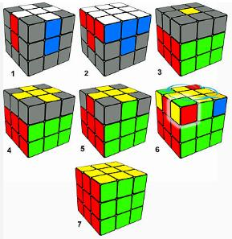

Antes de começarmos a resolver o cubo mágico, recomendamos que você tente completar um lado do cubo, esse exercício lhe dará intuição de como as peças no cubo se movem, caso não esteja interessado(a) apenas ignore esse trecho.
O primeiro passo do nosso método é montar uma cruz, para isso vamos primeiro colocar todos os meios que tem a cor branca neles ao lado do centro amarelo, como na imagem abaixo.
Então iremos girar o lado amarelo até que uma das cores do laterais dos meios combine com a cor do centro, depois giraremos o lado em que está aquele meio, como mostrado no vídeo abaixo.
Antes de começarmos a resolver o cubo mágico, recomendamos que você tente completar um lado do cubo, esse exercício lhe dará intuição de como as peças no cubo se movem, caso não esteja interessado(a) apenas ignore esse trecho.
O primeiro passo do nosso método é montar uma cruz, para isso vamos primeiro colocar todos os meios que tem a cor branca neles ao lado do centro amarelo, como na imagem abaixo.
Então iremos girar o lado amarelo até que uma das cores do laterais dos meios combine com a cor do centro, depois iremos girar o lado em que está aquele meio, como mostrado no vídeo abaixo.
Caso corretamente feito para todos os meios estarão na cruz,com suas respectivas cores combinando com as cores de seus centros.
O próximo passo será montar a primeira camada, para isso precisamos procurar cantos (peças com três cores nelas) na camada de cima que tenham branco como uma de suas cores (caso tenha cantos com essa descrição na camada de cima,leia o setor 6). Depois precisamos descobrir para onde aquela peça vai, usaremos suas cores como base, por exemplo, uma peça com vermelho e verde (e consequentemente branco), ela irá entre os centros vermelho e verde, então iremos girar a camada de cima até ela fique entre esses centros, agora, usaremos nosso primeiro algoritmo, ele fará com que a peça que está no canto direito que está acima, vá para o canto direito que está abaixo, este é R U R' U',caso não tenha entendido, não se preocupe, logo será explicado, mas tenha em mente que este algoritmo será usado de forma repetida, então quando ver essa sequência de letras novamente, saiba que é essa sequência de movimentos que explicarei, mova a camada à direita para cima, mova a camada de cima para a esquerda, mova a camada à direita para baixo, e mova a camada de cima para a direita, caso necessário, veja o vídeo abaixo para entender os movimentos.
Caso a peça esteja no lugar certo, mas não esteja correta, faça o algoritmo mais duas vezes, e caso ainda não esteja correto,mais duas vezes. Lembre-se de fazer todos os quatro movimentos do algoritmo, ao contrário, o algoritmo não funcionará.
E voltando para a situação em que não há nenhuma peça com branco na camada de cima, lembre-se, se nenhuma peça branca está em cima, quer dizer que ela só pode estar na camada de baixo, encontre-as, e para tirá-las da camada de baixo, usaremos o mesmo algoritmo antes citado, e então, faremos os paços descritos anteriormente.
Com isso estamos acabados com a primeira camada, e iremos então para a segunda camada do cubo mágico, nesse passo iremos focar nos meios, mais especificamente naqueles que não tem amarelo em um de seus lados, procuraremos primeiro na camada de cima (caso não tenha, leia o próximo trecho). Assim que achar, veja a cor que está ao lado e alinhe com seu respectivo centro e coloque o mesmo a sua frente. Então veremos para qual lado o meio precisará ir, se o meio precisar ir para a direita, mova o lado de cima para a esquerda, o lado da direita para cima, lado de cima para direita, lado da direita para baixo (ou U R U’ R’), rotacione o cubo para a direita e mova o lado de cima para a direita, o lado da esquerda para cima, lado de cima para esquerda, lado da esquerda para baixo (ou U’ L’ U L). Se o meio precisar ir para a esquerda, mova o lado de cima para a direita, o lado da esquerda para cima, lado de cima para esquerda, lado da esquerda para baixo (ou U’ L' U L), rotacione o cubo para a esquerda e mova o lado de cima para a esquerda, o lado da direita para cima, lado de cima para direita, lado da direita para baixo (ou U R U’ R’).
Caso não tenha meios na camada de cima, significa que eles estão na segunda camada, então removeremos eles usando os passos descritos no trecho 8 com qualquer meio que esteja na camada de cima e então repetiremos os passos no trecho 8 mais uma vez.
Estamos agora na última camada do cubo mágico, esta provavelmente será a camada mais fácil para execução, mas a mais difícil para o aprendizado.
Focaremos mais uma nos meios, pois faremos uma cruz no lado de cima do cubo, existem quatro casos para esse passo, a cruz já está feita, nesse caso não é necessário fazer nada, dois meios estão com amarelo para cima em uma linha reta, ou em uma curva, ou simplesmente não há meios com amarelo para cima.
Para o caso de ter dois meios com amarelo para cima em uma linha reta, coloque a linha de lado respectivo a você, mova a camada da frente em sentido horário, a camada da direita para cima, a camada de cima para esquerda, a camada da direita para baixo, a camada de cima para direita, e a camada da frente em sentido anti-horário (ou F R U R’ U’ F’) como é mostrado no vídeo a seguir.
Para o segundo caso de dois meios com amarelo para cima, coloque os meios com amarelo apontando para a sua esquerda e para frente e faça os movimentos do trecho 12 duas vezes, assim como mostrado no vídeo a seguir.
Caso não tenha meios com amarelo para cima, faça os movimentos do trecho 12 em qualquer lado com o centro amarelo para cima, e depois faça o passo do trecho 13.
Agora queremos alinhar as cores do lado dos meios, para isso iremos mover a camada de cima até que dois meios estejam alinhados com seus centros, caso os meios estejam lado a lado, mova a camada de cima até que os dois meios que estavam alinhados estejam apontados para a sua direita e frente e mova a camada de direita para cima, a camada de cima para a esquerda, a camada da direita para baixo, a camada de cima para a direita, a camada da direita para cima, a camada de cima duas vezes para qualquer lado e a camada da direita para baixo (ou R U R’ U R U2 R’), assim como no vídeo a seguir. Agora todos os meios devem conseguir ficar alinhados.
Caso os meios alinhados estejam em linha reta, coloque os dois meios de lado em relação a você e faça os movimentos do trecho 15, e então siga os passos do trecho 15, assim como mostrado no vídeo a seguir.
Com as cores dos meios alinhados, colocaremos agora os cantos da última camada nos lugares certos, para isso, teremos primeiro que ver quais cantos estão no lugar certo, não é necessário estar resolvido mas precisa estar no lugar certo, caso não tenha cantos no lugar certo, mova o lado de cima para esquerda, o lado da direita para cima, o lado de cima para direita, o lado da esquerda para cima, o lado de cima para esquerda, o lado da direita para baixo, o lado de cima para direita, e o lado da esquerda para cima (ou U R U’ L’ U R’ U’ L), assim como no vídeo a seguir, agora um dos cantos deve estar no lugar certo.
Com um dos cantos no lugar certo, coloque-o no lado da sua direita e na sua frente e faça os mesmos movimentos do trecho 17, agora todos os cantos deverão estar no lugar certo.
Agora alinhe os meios novamente e gire o cubo de cabeça para baixo, e então rotacione o cubo para que um canto que não esteja resolvido fique do lado direito e na sua frente, preste atenção para não estragar seu progresso, mova o lado da direita para cima, o lado de cima para esquerda, o lado da direita para baixo, e o lado de cima para a direita (ou R U R’ U’) duas vezes e cheque para ver se o canto está com amarelo virado para baixo, se não, faça mais duas vezes, se sim, mova a camada de baixo de modo que outro canto que não esteja com amarelo para baixo esteja no lugar do canto atual (pode parecer que tudo está destruído mas ao fim estará resolvido contanto que você faça todos os giros ditos) assim como no vídeo a seguir, e repita o processo até que todos os cantos estejam resolvidos.
E é isso! Você sabe como resolver um cubo mágico!